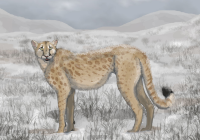

Cheetah

O guepardo ou chita (Acinonyx jubatus) é um animal da família dos felídeos (Felidae), ainda que de comportamento atípico, se comparado com outros da mesma família. É a única espécie vivente do gênero Acinonyx. Tendo como habitat a savana, vive na África, península Arábica e no sudoeste da Ásia. Também é conhecido pelos nomes de cheetah, cheetah-africana, lobo-tigre, leopardo-caçador ou onça-africana. Fisicamente, o guepardo ou chita é significativamente parecido com o leopardo. As almofadas das patas da chita têm ranhuras para se moverem melhor em alta velocidade, e sua longa cauda serve para lhe dar estabilidade nas curvas em alta velocidade. Cada chita pode ser identificada pelo padrão exclusivo de anéis existentes em sua cauda, tem uma cabeça pequena e aerodinâmica e uma coluna incrivelmente flexível, são habilidades que ajudam bastante na hora da perseguição.
É um animal predador, preferindo uma estratégia simples: caçar as suas presas através de perseguições a alta velocidade, em vez de táticas como a caça por emboscada ou em grupo, mas por vezes, pode caçar em dupla. Consegue atingir velocidades de 115 km/h, por curtos períodos de cada vez (até 500 metros de corrida), sendo o mais rápido de todos os animais terrestres.